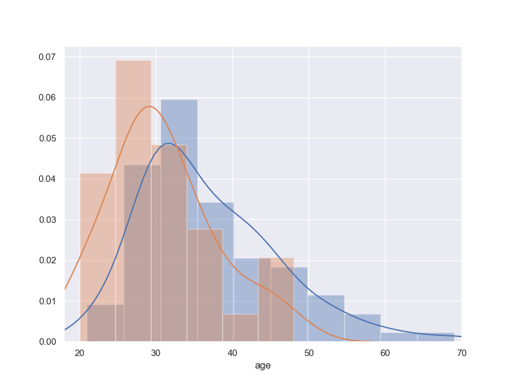

Дата обновления данных: 14.08.2018
Всего зарегистрировано: 77 атлетов (63 мужчин / 14 женщин)
Всего городов: 21
Участвуют ВТОРОЙ(!) год:
| 2017 год | 2018 год | |
|---|---|---|
| Аничкин Константин | 50 км | 50 км |
| Бабин Адам | 50 км | 100 км |
| Блавацкий Михаил | 50 км | 100 км |
| Богданова Светлана | 15 км | 30 км |
| Болотов Александр | 30 км | 50 км |
| Власов Андрей | 15 км | 30 км |
| Воротков Михаил | 30 км | 50 км |
| Дрозд Максим | 50 км | 50 км |
| Ерофеев Илья | 100 км | 100 км |
| Зобнин Даниил | 50 км | 100 км |
| Кадесников Сергей | 50 км | 50 км |
| Каменев Роман | 15 км | 30 км |
| Кононенко Константин | 30 км | 50 км |
| Луцев Сергей | 15 км | 30 км |
| Маталыцкий Алексей | 15 км | 30 км |
| Мурашкин Дмитрий | 50 км | 100 км |
| Нерсесянц Андрей | 30 км | 50 км |
| Прокудин Михаил | 50 км | 50 км |
| Семенова Ольга | 15 км | 30 км |
| Степанова Юлия | 30 км | 50 км |
| Хорольская Наталья | 100 км | 100 км |
| Чистяков Илья | 50 км | 100 км |
| Чумаков Сергей | 100 км | 100 км |
| Щеголев Юрий | 100 км | 100 км |
| Matyukevich Sergey | 50 км | 50 км |
64% из них решили УВЕЛИЧИТЬ дистанцию!
Распределение по возрасту мужчин и женщин
Женщины 20-41 год
в среднем 28,5 лет
Мужчины 26-69 лет
в среднем 38 лет